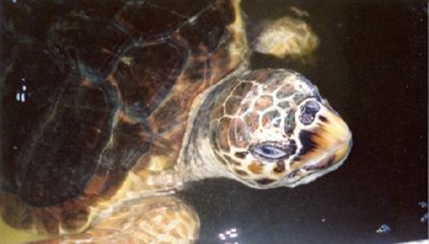

More rare than the Green Turtle is the severely endangered Hawksbill Turtle. It weighs between 50 and 70 kg and has a maximum length of 90 cm. It is also much smaller.
The hawksbill's tiny head and bird-like beak, which are employed to hunt creatures hidden in small cracks, are what give it its English name. It frequently travels to tropical and subtropical waters, including Sri Lanka.
Although being one of the lesser sea turtle species, this one is recognized for having a stunning shell that is composed of 13 symmetrical sections and is incredibly colorful.
Loggerhead Turtle
The Loggerhead Turtle is rare in Sri Lanka and more frequent in the East Coast of the United States. As their name suggests, they are often red and brown in color, and their huge head makes them easy to recognize.
It weights between 170 and 200kg and reaches a height of 1m. They are mainly carnivores, and their powerful jaws are perfect for tearing apart mollusks and crustaceans.
Olive Ridley Turtle
Because to the population's reliance on the safety of a select few beaches in the Indian, Pacific, and Atlantic Seas, this turtle is considered endangered. For their flesh and hide, they have historically been targeted intensively for hunting.
The Olive Ridley turtle, the smaller of the two species of ridley turtles, grows to a maximum size of 65 cm and weighs 35–45 kg. It gets its name from the color of its rusty-olive shell.
Every year, Olive Ridley Turtles lay their eggs, many of which can number over 150, on Kosgoda Beach. They consume fish, crabs, and some marine vegetation because they are omnivores.
Green Turtle
The most frequently seen turtle in Sri Lanka is the green turtle. They can also be found in the Atlantic, Pacific, and Indian oceans. Their English name alludes to the hue of the fat that may be discovered beneath their shells.
The majority of young green turtles are carnivores. Adults, however, only consume marine vegetation and use their sharply serrated jaws to do it.
They can weigh up to 250 kg and reach lengths of up to 1 m. Between 120 and 140 eggs are laid at a time by adult females. Green Turtles are frequently spotted on the beach at nighttime in the vicinity of the KSTCP. They typically only build nests every few years, but when they do, they lay numerous eggs.
Leatherback Turtle
This largest of the five kinds of turtle, which is critically endangered, is a rare find in Sri Lanka. It is still in danger of going extinct.
Long front flippers and a distinctive shell with black and white stripes make it easy to recognize; the carapace, which gives the creature a leathery look, is actually a layer of thick, rubbery skin dotted with hundreds of bone plates. In actuality, it is the only sea turtle that does not have a hard shell.
They also have a special blood circulation system for a cold-blooded reptile, which enables them to maintain blood temperature even in frigid waters by generating metabolic heat from their muscular activity.
The Leatherback can grow up to 3 meters long and weigh 750 kilograms. In search of their preferred prey, the jellyfish, they can dive to depths of 1500 meters thanks to their distinctive flexible carapace and its seven ridges.
Summary Table
Name
Image
Location
Unique Traits
Hawksbill Turtle
Hikkaduwa,Kosgoda,Bentota
It is recognized for its colourful shell composed of 13 symmetrical sections
Loggerhead Turtle

Hikkaduwa, Kosgoda
It often has a red and brown shell and possesses a distinctive large head
Olive Ridley Turtle
Hikkaduwa,Kosgoda,Bentota
It gets its name from the colour of its rusty olive shell
Green Turtle
Hikkaduwa,Kosgoda,Bentota
Named due to the colour of fat beneath their shells
Leatherback Turtle
Hikkaduwa,Kosgoda,Bentota
Largest out of the five turtles, it has a distinctive shell covered with black and white stripes

.jpeg)
.jpeg)

.jpeg)